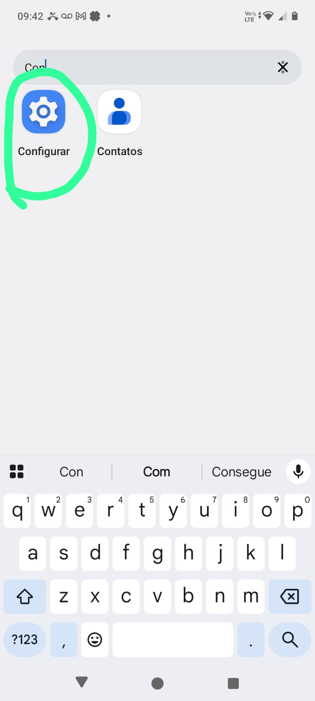
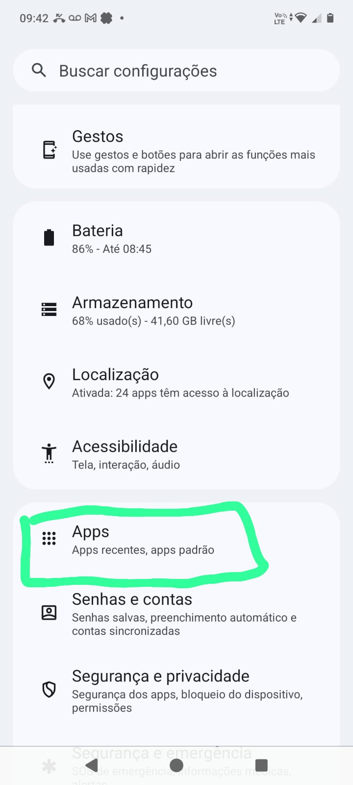
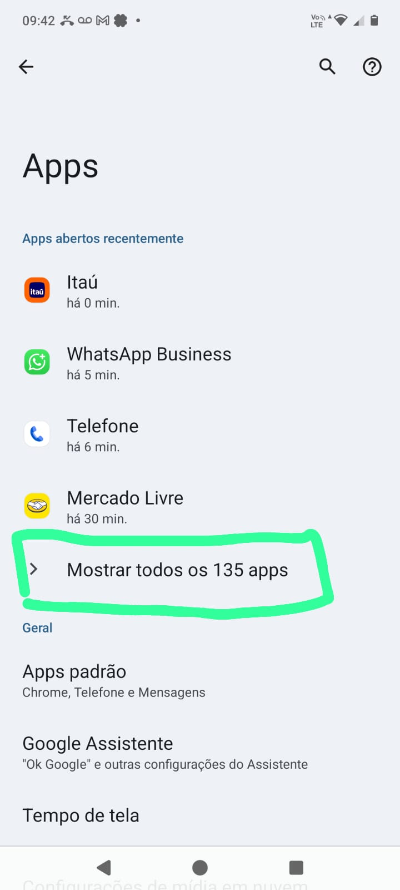
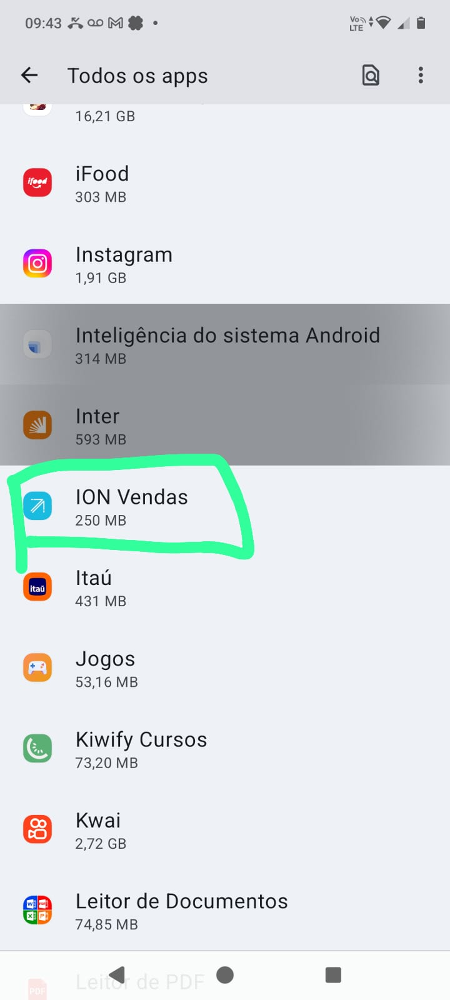
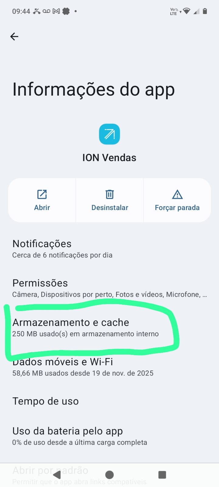
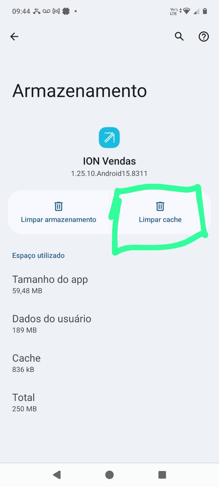

Como Limpar Dados/Cache
Siga o passo-a-passo em caso de erros ou lentidão.
Primeira forma
- Abra as CONFIGURAÇÕES
- Vá em APLICATIVOS
- Busque e selecione ION VENDAS
- Toque em Armazenamento
- Selecione LIMPAR CACHE ou LIMPAR DADOS
Limpar Cache: Apaga arquivos temporários, libera espaço e corrige lentidão ou erros sem perder configurações.
Limpar Dados: Apaga todas as informações salvas do aplicativo permanentemente.






Pelo Aplicativo ION
Assista ao vídeo
- Dúvidas? Entre em contato com o Suporte de TI